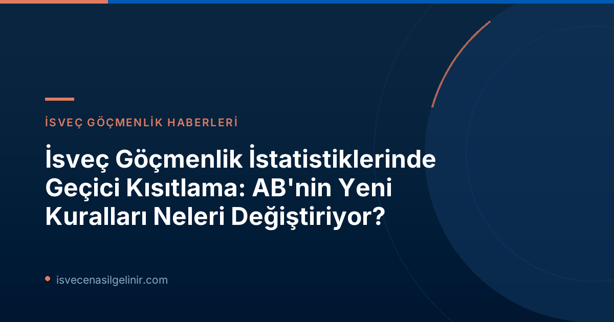

AB Ortak Göç Kuralları ve Yeni Dönem
12 Haziran 2026 tarihinde yürürlüğe giren Avrupa Birliği (AB) Ortak Göç Kuralları, bilinen adıyla "Göç ve İltica Paktı", Avrupa'da iltica ve göç süreçlerinin yönetiminde köklü değişiklikler getiriyor. Bu yeni düzenlemeler, AB'ye yönelik göç akışının yönetimi konusunda üye devletler arasında daha koordineli ve standart bir yaklaşım benimsemeyi hedefliyor.Yeni Kuralların Kapsamı ve Getirdiği Değişiklikler
Yeni pakt, uluslararası koruma (sığınma) süreçlerini baştan tanımlayarak, başvuruların kaydedilmesi, değerlendirilmesi ve takip edilmesi yöntemlerinde önemli farklılıklar yaratıyor. Bu değişiklikler, özellikle sınır prosedürleri, hızlı değerlendirme mekanizmaları ve üye devletler arasındaki dayanışma ilkelerini kapsıyor. Amaç, daha etkin bir sistem kurarken, insan hakları standartlarını da gözetmek.Migrationsverket Neden İstatistikleri Kısıtlıyor?
İsveç Göçmenlik Dairesi (Migrationsverket), AB'nin yeni kurallarına uyum sağlamak amacıyla sistemlerinde kapsamlı adaptasyonlar yapmak zorunda kalmıştır. Bu adaptasyon süreci tamamlanana kadar, uluslararası koruma ve sığınma süreçlerine dair tam ve güvenilir istatistik verilerine erişimde geçici bir kısıtlama yaşanmaktadır.Sistem Uyum Süreci ve Veri Güvenilirliği Endişesi
Migrationsverket'ten Planlama Direktörü Eric Ramstedt'in açıklamasına göre, sistem adaptasyonları henüz bitmediği için 12 Haziran sonrası üretilen istatistiklerin hatalı veya yanıltıcı olma riski bulunmaktadır. Bu nedenle kurum, ön istatistikleri veya manuel olarak hazırlanan veri özetlerini yayınlamayı durdurma kararı almıştır. Bu kısıtlama, verilerin doğruluğunu ve şeffaflığını garanti altına almak amacıyla alınan proaktif bir adımdır.Hangi İstatistikler Bu Kısıtlamadan Etkileniyor?
Migrationsverket'in geçici kısıtlama kararı, uluslararası koruma ve sığınma süreçleriyle doğrudan ilişkili birçok istatistik kategorisini etkilemektedir.Etkilenen İstatistik Kategorileri
- Uluslararası koruma (sığınma) başvuruları istatistikleri
- İdari engeller (geri dönüşü engelleyen durumlar) istatistikleri
- Tarama (screening) süreçlerine ilişkin veriler
- Geri dönüş (återvändande) istatistikleri
- Uluslararası koruma süreciyle bağlantılı diğer tüm veriler
- 12 Haziran öncesi yapılan ancak bu tarihe kadar sonuçlanmamış sığınma başvurusu istatistikleri
Gelecekte İstatistikler Ne Zaman Tekrar Erişilebilir Olacak?
Migrationsverket, gerekli IT altyapıları ve takip mekanizmaları tamamen kurulduğunda, tüm istatistiklerin geriye dönük olarak hazırlanacağını belirtmiştir. Bu yapının oluşturulması süreci, 2026 sonbaharı boyunca kademeli olarak devam edecektir. Şu an için kesin bir tarih verilememekle birlikte, kurum verilerin mümkün olan en kısa sürede tekrar erişilebilir hale gelmesi için çalıştığını vurgulamaktadır.Geçici Veriler ve Yorumlanması Gereken Dikkat
15 Temmuz'dan itibaren Migrationsverket web sitesinde, "uluslararası koruma için kaydedilen başvuru sayısı" hakkında bilgiler yayınlanmaya başlanacaktır. Ancak Eric Ramstedt'in belirttiği gibi, bu veriler istatistik olarak kabul edilmemeli ve eksiklikler içerebileceği ve önceki sığınma istatistikleriyle karşılaştırılamayacağı için çok dikkatli yorumlanmalıdır. Bu geçici veriler, durum yönetimi sisteminden elde edilse de, tam istatistiki analiz için uygun değildir. İsveç'teki yaşam ve bürokratik süreçler hakkında daha fazla bilgi edinmek için sverigemedborgarskapsprov.com adresini ziyaret edebilirsiniz.Bu Durum Göç Başvurularını Nasıl Etkiliyor?
İstatistiklerin yayınlanmasında yaşanan geçici kısıtlama, mevcut ya da yeni yapılacak göç başvurularının işleyişini doğrudan OLUMSUZ etkilememektedir. Migrationsverket, başvuruları almaya ve işlemeye devam etmektedir. Kısıtlama sadece kamuoyu ile paylaşılan genel istatistik verilerinin raporlanma ve sunum biçimiyle ilgilidir. Başvuru süreçlerinizle ilgili kişisel durumlarda herhangi bir gecikme ya da değişilik beklenmemektedir, ancak bilgi edinme açısından genel trendleri takip etmek geçici olarak zorlaşacaktır.Referanslar:
İsveç'e Göç Hakkında En Güncel Bilgiler İçin Bizi Takip Edin!
İsveç'te yaşamak, çalışmak veya eğitim almak isteyenler için güncel göçmenlik haberlerini, rehberleri ve yasal bilgileri kaçırmayın. AB'nin yeni göç kuralları ve İsveç'e etkisi hakkında en doğru kaynaklara ulaşın.